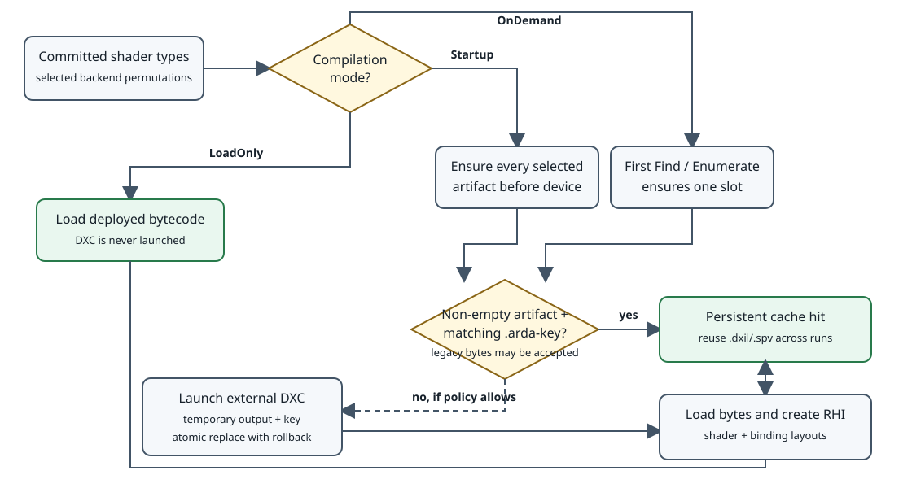
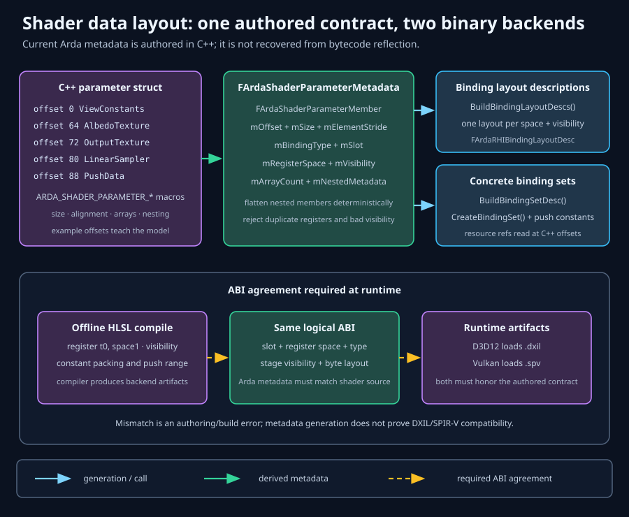

From authored program to device object
Shaders
A production renderer needs more than shader source. It needs reproducible source identity, platform-specific compiled artifacts, an explicit CPU/GPU binding contract, deterministic registration, and device-bound objects with controlled lifetimes. ArdaBackend separates those concerns so each can be validated at the earliest useful boundary.
Learning objectives
By the end of this chapter, you should be able to:
- trace HLSL from a repository file through DXIL or SPIR-V into an RHI shader object;
- explain why source identity, artifact identity, parameter metadata, and device objects are separate;
- design collision-free virtual roots and diagnose frozen-manifest failures;
- derive register, space, array, visibility, and nested-struct layouts from ArdaBackend declarations;
- distinguish a binding layout from a binding set and use each at the correct lifetime;
- identify CPU/HLSL ABI risks that authored metadata cannot prove; and
- choose
LoadOnly,Startup, orOnDemandcompilation and predict when DXC, disk I/O, and RHI creation occur.
Prerequisites and chapter scope
Read Architecture for the backend/device boundary and Getting started for configuration and initialization order. Familiarity with HLSL resource syntax such as register(t0, space1), C++ standard-layout structs, and explicit graphics APIs is useful.
This chapter covers ArdaBackend global shaders: named shader types registered independently of materials or scene objects. The current implementation can invoke an external DXC process at startup or first use, persist backend-specific bytecode and .arda-key sidecars, or operate as a bytecode-only loader. Shader compilation is a runtime service selected by configuration; it is not a CMake dependency.
The CPU-to-GPU shader pipeline
Five representations, five contracts
- Authored source: HLSL and includes express algorithms, entry points, resources, and data types.
- Preprocessed compilation unit: include resolution, macros, target profile, and defines produce the actual source seen by the compiler.
- Compiled artifact: the active module declares its format. The sample modules use DXC-produced DXIL for D3D12 and SPIR-V for Vulkan; custom modules may provide a backend-defined compiler service.
- RHI shader object: the active device validates the artifact, stage, and entry point and creates a backend object.
- Pipeline state: a later PSO combines shader objects with compatible resource layouts and, for graphics, fixed-function state.
These are not interchangeable. Source is reviewable and portable but cannot execute. DXIL and SPIR-V are compiler products, not source caches. An RHI shader is tied to a device and backend. A PSO is more specialized still: it captures a compatible combination of stages and state. Keeping the boundaries explicit makes invalidation tractable.
Source versus artifact identity
arda::backend::FArdaShaderType records a source path, output filename stem, entry point, stage, and optional parameter metadata. The source path answers “which authored program is this?” The output stem answers “which packaged file should runtime load?” One HLSL file can therefore produce several artifacts:
Source: /Project/Terrain/ArdaTerrain.hlsl
Entry point Stage Output stem
GenerateNoiseHeightmapCS Compute TerrainGenerateCS
TerrainVS Vertex TerrainVS
TerrainPS Pixel TerrainPS
D3D12 package: TerrainGenerateCS.dxil, TerrainVS.dxil, TerrainPS.dxil
Vulkan package: TerrainGenerateCS.spv, TerrainVS.spv, TerrainPS.spvArda resolves an exact registered module into FArdaShaderTarget, then derives artifact identity from its stable module name, binary format, encoded permutation, compiler profile and deterministic arguments, logical source identity, frozen virtual-source manifest, and local source/include trees. The compiler identity is either the executable bytes or the module descriptor's mShaderCompilerIdentity for an in-process service. Cache schema 3 stores the resulting 64-bit input key beside the artifact as <artifact>.arda-key. GetShaderArtifactExtension(const char*) returns the exact module's declared suffix; LoadShaderBytecode remains a byte loader.
That cache key is an input-identity check, not a device-compatibility certificate. Shader artifacts are module-format-specific: the native modules use DXIL or SPIR-V, while another module may define its own representation and extension. Although compatible devices may accept the same artifact, reuse is not guaranteed because the current key includes compiler, source, job, and backend inputs but no adapter or driver fingerprint. Native shader and pipeline creation is the final validation authority. Persistent PSO blobs are stricter still: they contain driver-native optimization data and are adapter- and driver-specific.
Registered permutations and runtime compilation
Each committed FArdaShaderType exposes a count of shader permutations. Arda enumerates the Cartesian product in encoded identifier order, calls the type's compile predicate with the exact FArdaShaderTarget, and creates jobs only for selected permutations. Policies can inspect the stable module name, compatibility class, and binary format. The permutation environment contributes sorted preprocessor definitions, so two logical variants produce distinct deterministic keys and artifact stems.

LoadOnly never launches DXC; Startup ensures every selected permutation before device creation; OnDemand defers ensure, byte loading, and RHI creation until lookup.Three compilation modes
LoadOnly- Never invokes the compiler. Global-map initialization eagerly loads every selected deployed artifact and creates its shader and layouts. Missing bytes fail initialization.
Startup- Before native device creation,
InitializeBackendor presentation initialization callsEnsureRegisteredShaderArtifactsfor every selected permutation of the active backend. Current sidecars become cache hits; missing or stale artifacts compile according to compiler policy. The map then eagerly creates RHI objects. OnDemand- Initialization records slots but does not read bytecode or create RHI shaders. The first
Findor enumeration of a slot callsEnsureRegisteredShaderArtifact, loads bytes, creates the shader and layouts, and memoizes success. This first-use compilation moves both compilation and native object creation onto the request path.
FArdaBackendConfiguration::mShaderCacheDirectory defaults to .arda-cache/shaders. ConfigureBackend resolves it to an absolute path; applications should normally override it with a writable per-user cache location rather than an install directory. ARDGExample --shader-cache <directory> demonstrates an explicit path and otherwise uses <executable-directory>/.arda-cache/shaders.
Module compiler service and fallback process
Core creates a deterministic DXC-compatible fallback invocation. FArdaShaderCompilerConfiguration::mCompilerExecutable has highest priority for that fallback; if empty, Arda uses the build-time ARDA_DEFAULT_DXC_EXECUTABLE, then ARDASHIR_DXC_EXECUTABLE. Before launch, the exact module may validate or rewrite the executable, profile, and arguments through ConfigureShaderCompileInvocation, or execute the request itself through InvokeShaderCompiler. An in-process compiler declares a stable mShaderCompilerIdentity so cache invalidation does not depend on an executable file.
The checked-in native-d3d12 module retains the DXIL fallback. The native-vulkan module owns its SPIR-V policy and adds -spirv, the Vulkan target environment, ray-tracing extension flags when required, and its binding shifts. Universal core contains none of those Vulkan decisions. mCommonArguments applies to all jobs; mModuleArguments attaches deterministic arguments to one exact stable module name.
FArdaShaderCompilerConfiguration::mSourceRoot is only a fallback prepended to a compiler job's relative, non-virtual source stem. A source stem beginning with / is resolved through the frozen virtual-source manifest instead, so normal registered application shaders should use a virtual source path plus AddShaderSourceDirectoryMapping or AddShaderSourceDirectory. Do not confuse this compiler fallback with ARDGExample's --shader-source: that command-line option selects the physical directory mapped to the example's virtual shader root.
Persistent sidecar cache and atomic publication
The shader artifact cache stores each module-suffixed artifact beside a 16-hex-digit .arda-key sidecar. The native modules declare .dxil and .spv; another module may declare a different suffix and binary format. A current key plus a non-empty artifact is a cross-process-execution cache hit. Publishing uses process-unique temporary output, key, and log files, then atomic replacement with rollback backups so readers do not observe a deliberately half-published pair. Same-process writers to one output are serialized; cross-process exclusion is best effort.
Development defaults compile missing and stale artifacts in non-NDEBUG builds; release defaults disable both. Legacy bytecode without a sidecar is accepted. In bytecode-only policy, existing artifacts are accepted without computing a current key, while missing artifacts fail. Keep deployed shipping bytes immutable and configure LoadOnly when the compiler must never run.
Optional explicit cook
CompileRegisteredShaderArtifacts(output, backendNames) is the universal explicit cook: each name resolves to one registered module and each manifest entry records that exact identity. The compatibility-class overload remains for existing callers and resolves the highest-priority module in each requested class. A cook force-compiles every selected job into a staging directory, then transactionally publishes artifacts, sidecars, and ArdaShaderManifest.json. Use separate output directories or distinct module-declared suffixes when two requested modules would otherwise produce the same artifact path.
ARDGExample --arda-cook-shaders CookedShaders \
--shader-source path/to/ARDGExample/ShadersFor normal development, choose mode and cache explicitly:
ARDGExample --backend vulkan \
--shader-mode ondemand \
--shader-cache path/to/user/cache \
--shader-source path/to/ARDGExample/ShadersAccepted mode spellings are exactly startup, ondemand, and load-only. A cook bypasses cache compatibility and rewrites all selected jobs; startup ensure preserves valid .arda-key hits and writes no manifest.
Shader stages and visibility
A shader stage describes where code executes; visibility describes which stages may access a binding. ArdaBackend's EArdaRHIShaderStage is a bit mask covering vertex, hull, domain, geometry, pixel, compute, amplification, mesh, and ray-tracing stages. A shader type itself names one stage. A parameter can use one stage or a compatible union such as vertex plus pixel.
- Vertex: transforms or generates per-vertex outputs and commonly reads vertex/instance data and scene constants.
- Hull and domain: configure and evaluate tessellation; they must be paired with compatible topology and patch control points.
- Geometry: consumes primitives and may emit a different primitive stream; use cautiously because throughput varies by architecture.
- Pixel: shades rasterized fragments and writes color/depth or performs resource reads and UAV writes.
- Compute: launches independent thread groups outside the graphics rasterization path.
- Amplification and mesh: replace traditional vertex assembly on capable devices.
- Ray tracing: uses specialized ray-generation, hit, miss, intersection, and callable programs.
Visibility is part of binding compatibility and metadata validation. A resource with None visibility is rejected. Registration also rejects a generated layout whose visibility does not include the shader type's stage. Narrow visibility can reduce native root-signature or descriptor-layout exposure; broad visibility simplifies sharing but may consume more platform limits.
Register reuse is legal across disjoint visibility. For example, a vertex-only texture at t0, space0 and a pixel-only texture at the same location do not overlap in ArdaBackend metadata. If either declaration becomes visible to both stages, the ranges overlap and validation returns DuplicateRegister.
The virtual shader namespace
Developer machines, build agents, and packaged applications rarely share absolute filesystem roots. A virtual shader path gives source a stable project identity independent of checkout location. The directory registry scans registered physical roots and atomically freezes a deterministic manifest before shader types are committed.
Exclusive roots and overlays
using namespace arda::backend;
auto project = AddShaderSourceDirectoryMapping(
"/Project",
std::filesystem::path("Shaders"));
if (!project)
return Report(project.mMessage);
// An overlay may share a root, but not a complete virtual filename.
auto shared = AddShaderSourceDirectory(
std::filesystem::path("ThirdParty/SharedShaders"),
"/Shared");
if (!shared)
return Report(shared.mMessage);
auto frozen = ScanAndFreezeShaderSourceDirectories();
if (!frozen)
return Report(frozen.mMessage);
std::filesystem::path physical;
auto resolved = ResolveVirtualShaderSource(
"/Project/Lighting/Deferred.hlsl", physical);
if (!resolved)
return Report(resolved.mMessage);arda::backend::AddShaderSourceDirectoryMapping grants one physical directory exclusive ownership of a root. Exact repeats are idempotent. The same root mapped elsewhere is rejected. Properly nested physical and virtual exclusive mappings are legal, and the deepest matching root wins.
arda::backend::AddShaderSourceDirectory creates an overlay. Multiple overlays can contribute distinct files below the same root. The collision unit is the complete normalized virtual filename, not merely the root: two physical files resolving to /Shared/Noise.hlsl are ambiguous even if their contents match.
Why freeze?
Freezing changes path discovery from a mutable filesystem query into an immutable manifest lookup. The startup cost is a scan; the benefits are deterministic identities, early collision detection, resistance to mid-run source mutation, and diagnostics that can name both physical contenders. Portable path components are limited to ASCII letters, digits, underscore, hyphen, and period. Traversal, path escape, unsupported extensions, and case-normalized collisions are rejected before device creation.
Deferred static registration and commit
Global shader classes use static registration nodes so declarations can live near renderer code without requiring a manually maintained central list. Static initialization order across translation units is not a reliable publication order, so construction only appends a pending arda::backend::FArdaShaderTypeRegistration. Publication is a separate deterministic operation.
class FBlurCS final : public arda::backend::FArdaGlobalShader
{
public:
using FParameters = FBlurParameters;
ARDA_DECLARE_GLOBAL_SHADER(FBlurCS);
};
ARDA_IMPLEMENT_GLOBAL_SHADER(
FBlurCS,
"/Project/Post/Blur.hlsl", // exact virtual source filename
"BlurCS", // packaged artifact stem
"BlurMain", // bytecode entry point
arda::rhi::EArdaRHIShaderStage::Compute);arda::backend::FArdaShaderTypeRegistration::CommitAll sorts candidates by type name and identity hash, validates all candidates, then publishes the whole set. It rejects empty identities, missing virtual sources, invalid parameter metadata, duplicate class names, and duplicate artifact identities.
The current identity hash includes source path, output stem, entry point, and stage. Parameter layout is validated during commit but is not part of that hash. Two classes that point to the same source, output, entry, and stage collide even if their C++ parameter declarations differ. That rule prevents two CPU contracts from silently claiming one executable artifact.

Authored parameter metadata, not binary reflection
arda::backend::FArdaShaderParameterMetadata describes the C++ parameter struct authored through macros. It records struct size and alignment plus each member's name, semantic kind, RHI binding type, register slot, register space, array count, byte offset, byte size, stride, visibility, and optional nested metadata.
This resembles reflection but has a crucial direction: the C++ declaration generates metadata. ArdaBackend does not inspect DXIL or SPIR-V to infer it. Therefore metadata can build layouts without backend-specific reflection libraries and remains available in stripped builds. The tradeoff is duplicated truth: HLSL and C++ can disagree while each is internally valid.
Worked declaration
using Stage = arda::rhi::EArdaRHIShaderStage;
struct alignas(16) FDispatchPushConstants
{
uint32_t mWidth = 0;
uint32_t mHeight = 0;
uint32_t mRadius = 0;
uint32_t mPadding = 0;
};
ARDA_BEGIN_SHADER_PARAMETER_STRUCT(FBlurInputs)
ARDA_SHADER_TEXTURE_SRV_ARRAY(
mMipInputs, 0, 1, 4, Stage::Compute)
ARDA_SHADER_SAMPLER(
mLinearClamp, 0, 1, Stage::Compute)
ARDA_END_SHADER_PARAMETER_STRUCT()
ARDA_BEGIN_SHADER_PARAMETER_STRUCT(FBlurParameters)
ARDA_SHADER_PARAMETER_STRUCT(FBlurInputs, mInputs)
ARDA_SHADER_BUFFER_UAV(
mOutput, 0, 2, Stage::Compute)
ARDA_SHADER_PUSH_CONSTANTS(
FDispatchPushConstants, mDispatch, 0, 3, Stage::Compute)
ARDA_END_SHADER_PARAMETER_STRUCT()The nested struct flattens in declaration order. mInputs.mMipInputs resolves to four texture SRVs beginning at t0, space1; mInputs.mLinearClamp resolves to s0, space1; mOutput resolves to u0, space2; and mDispatch becomes a push-constant item in space 3. arda::backend::FArdaShaderParameterMetadata::FindFlattenedMember can return the leaf and its absolute offset from the root C++ object.
Register classes, spaces, arrays, and overlap
HLSL register numbers are scoped by register class and space. ArdaBackend groups texture/buffer SRVs and acceleration structures as the shader-resource class, UAVs as unordered access, constant/uniform buffers as constant, samplers as sampler, and push constants as their own class. Thus t0, u0, b0, and s0 can coexist in one space.
An array of count N beginning at slot S occupies the half-open interval [S, S + N). Two members conflict when their spaces and register classes match, their visibility masks overlap, and their intervals intersect:
A = [2, 2 + 4) = [2, 6) // slots 2, 3, 4, 5
B = [5, 5 + 2) = [5, 7) // slots 5, 6
overlap iff A.start < B.end and B.start < A.end
iff 2 < 7 and 5 < 6
iff trueMetadata rejects zero-length arrays and arithmetic overflow. Binding-set construction then expands each declared array member into one binding item per element, preserving slot and assigning mArrayElement from zero through N − 1.
Memory layout, alignment, and ABI risk
The macros require a standard-layout C++ struct, which makes offsetof meaningful and supports byte-offset traversal. That guarantee is necessary but not sufficient for shader ABI compatibility. C++ and HLSL have different layout rules for vectors, matrices, arrays, booleans, nested structs, and constant-buffer packing.

Offset derivation for nested members
Suppose FBlurParameters::mInputs begins at byte 0 and FBlurInputs::mLinearClamp begins at byte 32. Flattening computes:
absoluteOffset(mInputs.mLinearClamp)
= offsetof(FBlurParameters, mInputs)
+ offsetof(FBlurInputs, mLinearClamp)
= 0 + 32
= 32 bytesFor a resource-reference array, element i is read from absoluteOffset + i × elementStride. This is a CPU object-layout calculation used to retrieve RHI references; it is not the offset of a texture inside GPU memory.
Value data versus resource handles
ARDA_SHADER_PARAMETER_VALUE contributes metadata and nesting offsets but is not itself emitted as a binding. Resource macros store typed RHI references that BuildBindingSetDesc reads directly. Constant-buffer macros bind a buffer resource; they do not upload the C++ struct automatically. Push constants are the exception: ArdaBackend selects the declared C++ byte range and writes those bytes to command state.
- Use fixed-width integer types; avoid C++
boolat shader boundaries. - Declare explicit padding where a shared block requires it, and assert
sizeof,alignof, and key offsets. - Choose and document row-major versus column-major matrix convention; compiler flags can change interpretation.
- Do not assume a C++
float[3]has the same array stride as an HLSL array offloat3. - Keep push-constant payloads trivially copyable in practice, even though current metadata validation checks size/alignment shape rather than a formal trait.
- Test both D3D12 and Vulkan because layout flags and SPIR-V interface rules can expose different mismatches.
Binding layouts versus binding sets
A binding layout is a schema: it says that a stage-visible register space contains particular slot ranges and resource kinds. A binding set is an instance: it supplies concrete textures, buffers, samplers, or acceleration structures for one layout. In database terms, the layout resembles a table definition and the set resembles a row.
arda::backend::FArdaShaderParameterMetadata::BuildBindingLayoutDescs emits one descriptor for each unique (register space, exact visibility mask) pair. All matching members become items in that descriptor. Consequently, one shader can own multiple layouts even when it has only one parameter struct.
const auto& metadata = FBlurParameters::GetStaticMetadata();
eastl::vector<arda::rhi::FArdaRHIBindingLayoutDesc> layoutDescs;
if (auto status = metadata.BuildBindingLayoutDescs(layoutDescs); !status)
return Report(status.mMessage);
eastl::vector<arda::rhi::FArdaRHIBindingLayoutRef> layouts;
for (const auto& desc : layoutDescs)
{
auto result = device->CreateBindingLayout(desc);
if (!result)
return Report(result.mStatus.mMessage);
layouts.push_back(eastl::move(result.mValue));
}The global shader map performs that layout creation once for initialized shader instances. At use time, populate a parameter struct and call arda::backend::FArdaShaderParameterMetadata::CreateBindingSet for each relevant layout. It verifies that the selected layout equals one generated from the metadata, expands arrays, rejects null resources, and requires every layout item to be completely populated.
FBlurParameters parameters;
parameters.mInputs.mMipInputs[0] = mip0;
parameters.mInputs.mMipInputs[1] = mip1;
parameters.mInputs.mMipInputs[2] = mip2;
parameters.mInputs.mMipInputs[3] = mip3;
parameters.mInputs.mLinearClamp = linearClamp;
parameters.mOutput = outputBuffer;
parameters.mDispatch = { width, height, radius, 0 };
arda::rhi::FArdaRHIBindingSetRef set;
auto status = FBlurParameters::GetStaticMetadata().CreateBindingSet(
*device, ¶meters, resourceLayout, set);
if (!status)
return Report(status.mMessage);Layouts are usually long-lived and shared by PSOs. Sets vary with resources and therefore often follow pass, material, or frame-resource lifetimes. Both retain RHI references according to the RHI ownership contract; consult RHI types and resources before caching sets across resource replacement.
Push constants
Push constants carry a small block of values directly in command state, avoiding a separately allocated constant buffer for rapidly changing data. They are suitable for compact draw/dispatch indices, dimensions, and flags—not large material blocks or arrays.
ArdaBackend requires a push block to have one element, nonzero size, a size divisible by four, and no more than 128 bytes. A generated layout may contain at most one push-constant block. These portable limits simplify mapping, but native APIs still differ: Vulkan exposes explicit ranges, while D3D12 commonly maps the concept to root constants through the abstraction.
for (const auto& layoutDesc : layoutDescs)
{
bool hasPushConstants = false;
for (const auto& item : layoutDesc.mItems)
hasPushConstants |=
item.mType == arda::rhi::EArdaRHIBindingType::PushConstants;
if (hasPushConstants)
{
auto status = arda::backend::ApplyShaderPushConstants(
*commandList, parameters, layoutDesc);
if (!status)
return Report(status.mMessage);
}
}arda::backend::ApplyShaderPushConstants resolves the exact member bytes selected by the layout and forwards them to the command list. Apply them after opening the list and in the state context expected by the command path. Reapply when values change; a binding set does not implicitly push the bytes.
Global shader map modes, lifetime, and idempotence
arda::backend::FArdaGlobalShaderMap is the bridge from committed, backend-neutral type records to device-bound shaders and layouts. It snapshots every selected registered permutation. LoadOnly and Startup load all slots eagerly; OnDemand publishes unloaded slots and resolves one under the map mutex when it is first requested.
arda::backend::FArdaGlobalShaderMap shaderMap;
if (!shaderMap.Initialize(
arda::backend::GetDeviceContext(),
arda::backend::GetBackendConfiguration().mShaderCacheDirectory))
{
for (const auto& diagnostic : shaderMap.GetDiagnostics())
LogShaderFailure(diagnostic.mShaderType, diagnostic.mMessage);
return false;
}
const auto* blur = shaderMap.Find(FBlurCS::GetStaticType());
if (!blur)
return false;
const auto& shader = blur->GetShader();
const auto& layouts = blur->GetBindingLayouts();
// Feed shader and layouts into a pipeline initializer.The Initialize(DeviceContext) overload uses the configured mShaderCacheDirectory; the Initialize(DeviceContext, ShaderDirectory) overload uses its explicit directory instead. Initialization is idempotent and pointer-stable only for the same device, backend, and resolved directory. A successful map rejects changed inputs with ResetRequired. Call Reset before device recovery, backend switching, or changing artifact roots.
The map retains the device, shader references, layouts, and instances. Code that keeps pointers returned by Find must not outlive the map or cross Reset. Reset the pipeline cache before or with the shader map if cached PSOs retain those shader objects.
Cross-platform artifact deployment
The artifact directory is flat with respect to shader types; it does not mirror the virtual source tree. For a shader with exactly one permutation, runtime forms ShaderDirectory / (<OutputStem> + backend extension). For a shader with multiple permutations, every encoded ID—including zero—forms ShaderDirectory / (<OutputStem>_P<PermutationId> + backend extension).
- D3D12: append
.dxil, for exampleBlurCS.dxilorBlurCS_P0.dxil. - Vulkan: append
.spv, for exampleBlurCS.spvorBlurCS_P0.spv. - Both backends in one install: use separate backend directories or package both extensions; select the directory consistently at initialization.
- Case-sensitive targets: preserve output-stem case exactly even if Windows development appears forgiving.
- Shipping builds: package cooked artifacts as immutable content, disable missing/outdated compilation, and select
LoadOnly; the explicit cook emitsArdaShaderManifest.json.
DXIL and SPIR-V generated from the same HLSL are not guaranteed to have identical layout behavior unless compiler flags and declarations enforce it. Record target environment, shader model, layout mode, optimization level, and compiler revision. Test artifacts on actual vendor drivers; successful offline compilation does not guarantee native pipeline creation.
Why this architecture, and production practices
Why authored metadata?
It is backend-neutral, available without shipping reflection data, directly connected to typed C++ resource references, and deterministic enough to hash. Its cost is maintaining a mirrored contract. Binary reflection would reduce some drift but adds backend-specific parsing, may be stripped, and still cannot establish that arbitrary C++ value layouts match shader packing.
Why deferred registration?
It permits local declarations while removing static initialization order from final publication. The cost is an explicit commit phase and startup-wide failure: one bad global shader prevents the map from initializing. That fail-fast behavior is preferable to discovering a missing core shader in the middle of a frame.
Operational checklist
- Cook explicitly in CI and fail on compiler diagnostics, reflection mismatches, or missing backend variants.
- Keep the persistent key schema conservative: Arda hashes compiler bytes, job inputs, frozen virtual sources, and local include roots.
- Use stable virtual roots per project or plugin; never encode checkout-specific paths in shader identity.
- Make output stems globally unique within an artifact directory.
- Keep parameter blocks small and split by update frequency and visibility.
- Prefer narrow stage visibility until a layout is intentionally shared.
- Add C++ static assertions and generated reflection tests for every value block crossing the CPU/GPU ABI.
- Log shader type, virtual source, physical source, artifact path, backend, stage, and device validation output together.
- Choose
Startupwhen all selected shaders must be ready before device publication; chooseOnDemandonly when first-use latency is acceptable. - Initialize global shaders before precaching the pipeline-state working set.
- Exercise startup on clean packages so developer-only source or artifact paths cannot mask deployment gaps.
Failure analysis
DuplicateMappingRoot,DuplicateVirtualPath, orAmbiguousPhysicalFile- The namespace has conflicting ownership. Enumerate directory state, identify every physical contender, and repair the roots. Renaming output artifacts does not fix source identity collisions.
EscapesPhysicalDirectoryorUnsupportedExtension- The scan found a path outside its registered root or a non-shader file. Remove traversal/symlink escape and keep generated artifacts outside source roots.
DirectoryRegistryNotFrozenorMissingVirtualSource- Commit ran before the manifest was frozen, or the exact virtual filename was absent. Include the source extension in virtual source identities and call
ScanAndFreezeShaderSourceDirectoriesafter all mappings. DuplicateTypeNameorDuplicateIdentity- Two static nodes claim the same public name or the same source/output/entry/stage tuple. Search all linked modules; duplicate registration often appears when implementation macros are placed in headers.
InvalidParameterMetadata- Commit wrapped an
EArdaShaderStructError. Inspect the message for malformed offsets, arrays, visibility, register overlap, or push constants. Fix the authored metadata before investigating bytecode. BytecodeMissing,BytecodeEmpty, orBytecodeReadFailed- Compare diagnostic path with output stem and active extension. Verify packaging, permissions, case, and atomic file publication. The source manifest being valid does not imply artifacts exist.
CompilerUnavailable,ArtifactOutdated, orCompilationFailed- Verify the explicit compiler path, build default, or
ARDASHIR_DXC_EXECUTABLE; inspect captured DXC output and the diagnostic's type, backend, permutation, source, and output. An outdated sidecar is rebuilt only when policy permits it. ShaderCreationFailed- I/O succeeded but the device rejected the artifact. Verify backend format, entry point, stage/profile, target environment, compiler version, supported features, and native validation-layer output.
LayoutCreationFailedorBindingCreationFailed- Distinguish schema creation from instance population. Schema failures point to unsupported or malformed layout descriptors; set failures point to a foreign layout, null resource, incomplete array, or device creation error.
- Correct startup, incorrect pixels
- Treat this as an ABI or algorithm problem. Compare compiler reflection against metadata, capture GPU bindings, inspect resource states, verify matrix/packing conventions, and reduce to one known value or texture. Internal metadata validity alone cannot prove shader agreement.
ResetRequired- The map already owns objects for another device, backend, or directory. Quiesce GPU work, release dependent PSOs and bindings, reset in ownership order, then initialize again.
Chapter summary
- ArdaBackend can ensure registered DXIL or SPIR-V through an external DXC process; source, artifacts, RHI shaders, and PSOs still have distinct identities and lifetimes.
LoadOnlyeagerly loads deployed bytes,Startupensures all selected permutations before device creation, andOnDemandcompiles and creates a slot on first use.- Persistent
.arda-keysidecars validate deterministic compiler/source/job inputs across executions; explicit cook additionally emits a manifest. - The frozen virtual namespace makes source lookup portable and collision failures deterministic.
- Deferred static nodes become usable only after deterministic, all-at-once commit.
- Authored metadata describes C++ members and bindings but does not reflect or validate the binary shader ABI.
- Registers are scoped by class, space, and visibility; arrays occupy slot intervals; nested structs flatten to dotted paths and absolute offsets.
- Layouts describe schemas, sets provide concrete resources, and push constants copy a small selected byte range.
- The global shader map owns device-bound shaders and layouts and is idempotent only for unchanged initialization inputs.
Checkpoint questions
- Why can two entry points in one HLSL file require different output stems?
- Which inputs besides source text should invalidate an offline shader artifact?
- What do the Vulkan shifts
t=0,s=128,b=256, andu=384prevent in register space 0? - Why must a production CMake rule add transitive HLSL includes to its dependency model?
- When may two physical directories share a virtual root, and what exact collision remains forbidden?
- Why does static construction append a pending node instead of publishing a shader type immediately?
- Do
t0andu0in the same space conflict? What aboutt0andt0with overlapping visibility? - For an array beginning at slot 3 with count 5, which slots are occupied?
- What does standard-layout C++ guarantee, and what shader ABI facts does it not guarantee?
- Why can one parameter struct generate multiple binding layouts?
- When should push constants be replaced by a constant or uniform buffer?
- What must be released or reset before reinitializing the map for another device?
Further reading within these docs
- Pipeline states — combine shader objects, layouts, formats, and fixed-function state into cached PSOs.
- RHI types & resources — understand descriptors, references, device affinity, formats, and binding ownership.
- Commands — bind sets, apply state, dispatch or draw, and synchronize resource access.
- Diagnostics — connect ArdaBackend status values with native validation output.
- Glossary — revisit shader, bytecode, DXIL, SPIR-V, ABI, binding, and lifetime terminology.
- API reference — search exact signatures after learning the subsystem contracts here.